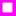

<!doctype html>
<html lang="en">
    <head>
        <meta charset="utf-8">
        <meta http-equiv="X-UA-Compatible" content="IE=edge">
        <meta name="viewport" content="initial-scale=1,user-scalable=no,maximum-scale=1,width=device-width">
        <meta name="mobile-web-app-capable" content="yes">
        <meta name="apple-mobile-web-app-capable" content="yes">
        <link rel="stylesheet" href="css/leaflet.css">
        <link rel="stylesheet" href="css/L.Control.Layers.Tree.css">
        <link rel="stylesheet" href="css/qgis2web.css">
        <link rel="stylesheet" href="css/fontawesome-all.min.css">
        <link rel="stylesheet" href="css/leaflet-measure.css">
        <style>
        html, body, #map {
            width: 100%;
            height: 100%;
            padding: 0;
            margin: 0;
        }
        </style>
        <title></title>
    </head>
    <body>
        <div id="map">
        </div>
        <script src="js/qgis2web_expressions.js"></script>
        <script src="js/leaflet.js"></script>
        <script src="js/L.Control.Layers.Tree.min.js"></script>
        <script src="js/leaflet-svg-shape-markers.min.js"></script>
        <script src="js/leaflet.rotatedMarker.js"></script>
        <script src="js/leaflet.pattern.js"></script>
        <script src="js/leaflet-hash.js"></script>
        <script src="js/Autolinker.min.js"></script>
        <script src="js/rbush.min.js"></script>
        <script src="js/labelgun.min.js"></script>
        <script src="js/labels.js"></script>
        <script src="js/leaflet-measure.js"></script>
        <script src="data/Grids_2.js"></script>
        <script src="data/PunePincode_3.js"></script>
        <script src="data/Location_Polygons_4.js"></script>
        <script src="data/ExistingFirestations_5.js"></script>
        <script src="data/Phase_3_6.js"></script>
        <script src="data/Phase_2_7.js"></script>
        <script src="data/Phase_1_8.js"></script>
        <script>
        var map = L.map('map', {
            zoomControl:false, maxZoom:28, minZoom:1
        }).fitBounds([[18.427034443932204,73.64123812547037],[18.689522404599177,74.17748490482853]]);
        var hash = new L.Hash(map);
        map.attributionControl.setPrefix('<a href="https://github.com/tomchadwin/qgis2web" target="_blank">qgis2web</a> &middot; <a href="https://leafletjs.com" title="A JS library for interactive maps">Leaflet</a> &middot; <a href="https://qgis.org">QGIS</a>');
        var autolinker = new Autolinker({truncate: {length: 30, location: 'smart'}});
        // remove popup's row if "visible-with-data"
        function removeEmptyRowsFromPopupContent(content, feature) {
         var tempDiv = document.createElement('div');
         tempDiv.innerHTML = content;
         var rows = tempDiv.querySelectorAll('tr');
         for (var i = 0; i < rows.length; i++) {
             var td = rows[i].querySelector('td.visible-with-data');
             var key = td ? td.id : '';
             if (td && td.classList.contains('visible-with-data') && feature.properties[key] == null) {
                 rows[i].parentNode.removeChild(rows[i]);
             }
         }
         return tempDiv.innerHTML;
        }
        // add class to format popup if it contains media
		function addClassToPopupIfMedia(content, popup) {
			var tempDiv = document.createElement('div');
			tempDiv.innerHTML = content;
			if (tempDiv.querySelector('td img')) {
				popup._contentNode.classList.add('media');
					// Delay to force the redraw
					setTimeout(function() {
						popup.update();
					}, 10);
			} else {
				popup._contentNode.classList.remove('media');
			}
		}
        var zoomControl = L.control.zoom({
            position: 'topleft'
        }).addTo(map);
        var measureControl = new L.Control.Measure({
            position: 'topleft',
            primaryLengthUnit: 'meters',
            secondaryLengthUnit: 'kilometers',
            primaryAreaUnit: 'sqmeters',
            secondaryAreaUnit: 'hectares'
        });
        measureControl.addTo(map);
        document.getElementsByClassName('leaflet-control-measure-toggle')[0].innerHTML = '';
        document.getElementsByClassName('leaflet-control-measure-toggle')[0].className += ' fas fa-ruler';
        var bounds_group = new L.featureGroup([]);
        function setBounds() {
        }
        map.createPane('pane_GoogleSattelite_0');
        map.getPane('pane_GoogleSattelite_0').style.zIndex = 400;
        var layer_GoogleSattelite_0 = L.tileLayer('http://www.google.cn/maps/vt?lyrs=s@189&gl=cn&x={x}&y={y}&z={z}', {
            pane: 'pane_GoogleSattelite_0',
            opacity: 1.0,
            attribution: '',
            minZoom: 1,
            maxZoom: 28,
            minNativeZoom: 0,
            maxNativeZoom: 18
        });
        layer_GoogleSattelite_0;
        map.addLayer(layer_GoogleSattelite_0);
        map.createPane('pane_OpenStreetMap_1');
        map.getPane('pane_OpenStreetMap_1').style.zIndex = 401;
        var layer_OpenStreetMap_1 = L.tileLayer('https://tile.openstreetmap.org/{z}/{x}/{y}.png', {
            pane: 'pane_OpenStreetMap_1',
            opacity: 1.0,
            attribution: '',
            minZoom: 1,
            maxZoom: 28,
            minNativeZoom: 0,
            maxNativeZoom: 19
        });
        layer_OpenStreetMap_1;
        map.addLayer(layer_OpenStreetMap_1);
        function pop_Grids_2(feature, layer) {
            var popupContent = '<table>\
                    <tr>\
                        <th scope="row">pincode</th>\
                        <td class="visible-with-data" id="pincode">' + (feature.properties['pincode'] !== null ? autolinker.link(feature.properties['pincode'].toLocaleString()) : '') + '</td>\
                    </tr>\
                    <tr>\
                        <th scope="row">safe_zone</th>\
                        <td class="visible-with-data" id="safe_zone">' + (feature.properties['safe_zone'] !== null ? autolinker.link(feature.properties['safe_zone'].toLocaleString()) : '') + '</td>\
                    </tr>\
                </table>';
            var content = removeEmptyRowsFromPopupContent(popupContent, feature);
			layer.on('popupopen', function(e) {
				addClassToPopupIfMedia(content, e.popup);
			});
			layer.bindPopup(content, { maxHeight: 400 });
        }

        function style_Grids_2_0(feature) {
            switch(String(feature.properties['safe_zone'])) {
                case '1km':
                    return {
                pane: 'pane_Grids_2',
                stroke: false, 
                fill: true,
                fillOpacity: 1,
                fillColor: 'rgba(0,176,15,0.6)',
                interactive: true,
            }
                    break;
                case '2km':
                    return {
                pane: 'pane_Grids_2',
                stroke: false, 
                fill: true,
                fillOpacity: 1,
                fillColor: 'rgba(167,213,0,0.6)',
                interactive: true,
            }
                    break;
                case '3km':
                    return {
                pane: 'pane_Grids_2',
                stroke: false, 
                fill: true,
                fillOpacity: 1,
                fillColor: 'rgba(251,255,0,0.6)',
                interactive: true,
            }
                    break;
                case '4km':
                    return {
                pane: 'pane_Grids_2',
                stroke: false, 
                fill: true,
                fillOpacity: 1,
                fillColor: 'rgba(255,174,0,0.6)',
                interactive: true,
            }
                    break;
                case '5km':
                    return {
                pane: 'pane_Grids_2',
                stroke: false, 
                fill: true,
                fillOpacity: 1,
                fillColor: 'rgba(251,0,0,0.6)',
                interactive: true,
            }
                    break;
                case 'Above 5km':
                    return {
                pane: 'pane_Grids_2',
                stroke: false, 
                fill: true,
                fillOpacity: 1,
                fillColor: 'rgba(203,0,0,0.30117647058823527)',
                interactive: true,
            }
                    break;
            }
        }
        map.createPane('pane_Grids_2');
        map.getPane('pane_Grids_2').style.zIndex = 402;
        map.getPane('pane_Grids_2').style['mix-blend-mode'] = 'normal';
        var layer_Grids_2 = new L.geoJson(json_Grids_2, {
            attribution: '',
            interactive: true,
            dataVar: 'json_Grids_2',
            layerName: 'layer_Grids_2',
            pane: 'pane_Grids_2',
            onEachFeature: pop_Grids_2,
            style: style_Grids_2_0,
        });
        bounds_group.addLayer(layer_Grids_2);
        map.addLayer(layer_Grids_2);
        function pop_PunePincode_3(feature, layer) {
            var popupContent = '<table>\
                    <tr>\
                        <th scope="row">Pincode</th>\
                        <td class="visible-with-data" id="Pincode">' + (feature.properties['Pincode'] !== null ? autolinker.link(feature.properties['Pincode'].toLocaleString()) : '') + '</td>\
                    </tr>\
                    <tr>\
                        <th scope="row">Area_sqm</th>\
                        <td class="visible-with-data" id="Area_sqm">' + (feature.properties['Area_sqm'] !== null ? autolinker.link(feature.properties['Area_sqm'].toLocaleString()) : '') + '</td>\
                    </tr>\
                    <tr>\
                        <td colspan="2">' + (feature.properties['dis'] !== null ? autolinker.link(feature.properties['dis'].toLocaleString()) : '') + '</td>\
                    </tr>\
                </table>';
            var content = removeEmptyRowsFromPopupContent(popupContent, feature);
			layer.on('popupopen', function(e) {
				addClassToPopupIfMedia(content, e.popup);
			});
			layer.bindPopup(content, { maxHeight: 400 });
        }

        function style_PunePincode_3_0() {
            return {
                pane: 'pane_PunePincode_3',
                opacity: 1,
                color: 'rgba(86,86,86,1.0)',
                dashArray: '',
                lineCap: 'square',
                lineJoin: 'bevel',
                weight: 1.0,
                fillOpacity: 0,
                interactive: false,
            }
        }
        map.createPane('pane_PunePincode_3');
        map.getPane('pane_PunePincode_3').style.zIndex = 403;
        map.getPane('pane_PunePincode_3').style['mix-blend-mode'] = 'normal';
        var layer_PunePincode_3 = new L.geoJson(json_PunePincode_3, {
            attribution: '',
            interactive: false,
            dataVar: 'json_PunePincode_3',
            layerName: 'layer_PunePincode_3',
            pane: 'pane_PunePincode_3',
            onEachFeature: pop_PunePincode_3,
            style: style_PunePincode_3_0,
        });
        bounds_group.addLayer(layer_PunePincode_3);
        function pop_Location_Polygons_4(feature, layer) {
            var popupContent = '<table>\
                    <tr>\
                        <th scope="row">TALUKA</th>\
                        <td class="visible-with-data" id="TALUKA">' + (feature.properties['TALUKA'] !== null ? autolinker.link(feature.properties['TALUKA'].toLocaleString()) : '') + '</td>\
                    </tr>\
                    <tr>\
                        <th scope="row">Broad_LU</th>\
                        <td class="visible-with-data" id="Broad_LU">' + (feature.properties['Broad_LU'] !== null ? autolinker.link(feature.properties['Broad_LU'].toLocaleString()) : '') + '</td>\
                    </tr>\
                    <tr>\
                        <th scope="row">Label</th>\
                        <td class="visible-with-data" id="Label">' + (feature.properties['Label'] !== null ? autolinker.link(feature.properties['Label'].toLocaleString()) : '') + '</td>\
                    </tr>\
                    <tr>\
                        <th scope="row">Area_HA</th>\
                        <td class="visible-with-data" id="Area_HA">' + (feature.properties['Area_HA'] !== null ? autolinker.link(feature.properties['Area_HA'].toLocaleString()) : '') + '</td>\
                    </tr>\
                    <tr>\
                        <th scope="row">Ownership_</th>\
                        <td class="visible-with-data" id="Ownership_">' + (feature.properties['Ownership_'] !== null ? autolinker.link(feature.properties['Ownership_'].toLocaleString()) : '') + '</td>\
                    </tr>\
                    <tr>\
                        <th scope="row">Reservatio</th>\
                        <td class="visible-with-data" id="Reservatio">' + (feature.properties['Reservatio'] !== null ? autolinker.link(feature.properties['Reservatio'].toLocaleString()) : '') + '</td>\
                    </tr>\
                    <tr>\
                        <td class="visible-with-data" id="Village__1"colspan="2"><strong>Village__1</strong><br />' + (feature.properties['Village__1'] !== null ? autolinker.link(feature.properties['Village__1'].toLocaleString()) : '') + '</td>\
                    </tr>\
                    <tr>\
                        <th scope="row">Growth_Cen</th>\
                        <td class="visible-with-data" id="Growth_Cen">' + (feature.properties['Growth_Cen'] !== null ? autolinker.link(feature.properties['Growth_Cen'].toLocaleString()) : '') + '</td>\
                    </tr>\
                </table>';
            var content = removeEmptyRowsFromPopupContent(popupContent, feature);
			layer.on('popupopen', function(e) {
				addClassToPopupIfMedia(content, e.popup);
			});
			layer.bindPopup(content, { maxHeight: 400 });
        }

        function style_Location_Polygons_4_0() {
            return {
                pane: 'pane_Location_Polygons_4',
                opacity: 1,
                color: 'rgba(255,0,251,1.0)',
                dashArray: '',
                lineCap: 'square',
                lineJoin: 'bevel',
                weight: 5.0,
                fillOpacity: 0,
                interactive: true,
            }
        }
        map.createPane('pane_Location_Polygons_4');
        map.getPane('pane_Location_Polygons_4').style.zIndex = 404;
        map.getPane('pane_Location_Polygons_4').style['mix-blend-mode'] = 'normal';
        var layer_Location_Polygons_4 = new L.geoJson(json_Location_Polygons_4, {
            attribution: '',
            interactive: true,
            dataVar: 'json_Location_Polygons_4',
            layerName: 'layer_Location_Polygons_4',
            pane: 'pane_Location_Polygons_4',
            onEachFeature: pop_Location_Polygons_4,
            style: style_Location_Polygons_4_0,
        });
        bounds_group.addLayer(layer_Location_Polygons_4);
        function pop_ExistingFirestations_5(feature, layer) {
            var popupContent = '<table>\
                    <tr>\
                        <th scope="row">Name</th>\
                        <td class="visible-with-data" id="Name">' + (feature.properties['Name'] !== null ? autolinker.link(feature.properties['Name'].toLocaleString()) : '') + '</td>\
                    </tr>\
                </table>';
            var content = removeEmptyRowsFromPopupContent(popupContent, feature);
			layer.on('popupopen', function(e) {
				addClassToPopupIfMedia(content, e.popup);
			});
			layer.bindPopup(content, { maxHeight: 400 });
        }

        function style_ExistingFirestations_5_0() {
            return {
                pane: 'pane_ExistingFirestations_5',
                shape: 'square',
                radius: 4.8,
                opacity: 1,
                color: 'rgba(255,255,255,1.0)',
                dashArray: '',
                lineCap: 'butt',
                lineJoin: 'miter',
                weight: 1,
                fill: true,
                fillOpacity: 1,
                fillColor: 'rgba(0,0,0,1.0)',
                interactive: true,
            }
        }
        map.createPane('pane_ExistingFirestations_5');
        map.getPane('pane_ExistingFirestations_5').style.zIndex = 405;
        map.getPane('pane_ExistingFirestations_5').style['mix-blend-mode'] = 'normal';
        var layer_ExistingFirestations_5 = new L.geoJson(json_ExistingFirestations_5, {
            attribution: '',
            interactive: true,
            dataVar: 'json_ExistingFirestations_5',
            layerName: 'layer_ExistingFirestations_5',
            pane: 'pane_ExistingFirestations_5',
            onEachFeature: pop_ExistingFirestations_5,
            pointToLayer: function (feature, latlng) {
                var context = {
                    feature: feature,
                    variables: {}
                };
                return L.shapeMarker(latlng, style_ExistingFirestations_5_0(feature));
            },
        });
        bounds_group.addLayer(layer_ExistingFirestations_5);
        map.addLayer(layer_ExistingFirestations_5);
        function pop_Phase_3_6(feature, layer) {
            var popupContent = '<table>\
                    <tr>\
                        <th scope="row">Name</th>\
                        <td class="visible-with-data" id="Name">' + (feature.properties['Name'] !== null ? autolinker.link(feature.properties['Name'].toLocaleString()) : '') + '</td>\
                    </tr>\
                </table>';
            var content = removeEmptyRowsFromPopupContent(popupContent, feature);
			layer.on('popupopen', function(e) {
				addClassToPopupIfMedia(content, e.popup);
			});
			layer.bindPopup(content, { maxHeight: 400 });
        }

        function style_Phase_3_6_0() {
            return {
                pane: 'pane_Phase_3_6',
                radius: 8.0,
                opacity: 1,
                color: 'rgba(50,87,128,1.0)',
                dashArray: '',
                lineCap: 'butt',
                lineJoin: 'miter',
                weight: 2.0,
                fill: true,
                fillOpacity: 1,
                fillColor: 'rgba(0,195,255,1.0)',
                interactive: true,
            }
        }
        map.createPane('pane_Phase_3_6');
        map.getPane('pane_Phase_3_6').style.zIndex = 406;
        map.getPane('pane_Phase_3_6').style['mix-blend-mode'] = 'normal';
        var layer_Phase_3_6 = new L.geoJson(json_Phase_3_6, {
            attribution: '',
            interactive: true,
            dataVar: 'json_Phase_3_6',
            layerName: 'layer_Phase_3_6',
            pane: 'pane_Phase_3_6',
            onEachFeature: pop_Phase_3_6,
            pointToLayer: function (feature, latlng) {
                var context = {
                    feature: feature,
                    variables: {}
                };
                return L.circleMarker(latlng, style_Phase_3_6_0(feature));
            },
        });
        bounds_group.addLayer(layer_Phase_3_6);
        map.addLayer(layer_Phase_3_6);
        function pop_Phase_2_7(feature, layer) {
            var popupContent = '<table>\
                    <tr>\
                        <th scope="row">Name</th>\
                        <td class="visible-with-data" id="Name">' + (feature.properties['Name'] !== null ? autolinker.link(feature.properties['Name'].toLocaleString()) : '') + '</td>\
                    </tr>\
                </table>';
            var content = removeEmptyRowsFromPopupContent(popupContent, feature);
			layer.on('popupopen', function(e) {
				addClassToPopupIfMedia(content, e.popup);
			});
			layer.bindPopup(content, { maxHeight: 400 });
        }

        function style_Phase_2_7_0() {
            return {
                pane: 'pane_Phase_2_7',
                radius: 8.0,
                opacity: 1,
                color: 'rgba(61,128,53,1.0)',
                dashArray: '',
                lineCap: 'butt',
                lineJoin: 'miter',
                weight: 2.0,
                fill: true,
                fillOpacity: 1,
                fillColor: 'rgba(255,255,255,1.0)',
                interactive: true,
            }
        }
        map.createPane('pane_Phase_2_7');
        map.getPane('pane_Phase_2_7').style.zIndex = 407;
        map.getPane('pane_Phase_2_7').style['mix-blend-mode'] = 'normal';
        var layer_Phase_2_7 = new L.geoJson(json_Phase_2_7, {
            attribution: '',
            interactive: true,
            dataVar: 'json_Phase_2_7',
            layerName: 'layer_Phase_2_7',
            pane: 'pane_Phase_2_7',
            onEachFeature: pop_Phase_2_7,
            pointToLayer: function (feature, latlng) {
                var context = {
                    feature: feature,
                    variables: {}
                };
                return L.circleMarker(latlng, style_Phase_2_7_0(feature));
            },
        });
        bounds_group.addLayer(layer_Phase_2_7);
        map.addLayer(layer_Phase_2_7);
        function pop_Phase_1_8(feature, layer) {
            var popupContent = '<table>\
                    <tr>\
                        <th scope="row">Name</th>\
                        <td class="visible-with-data" id="Name">' + (feature.properties['Name'] !== null ? autolinker.link(feature.properties['Name'].toLocaleString()) : '') + '</td>\
                    </tr>\
                </table>';
            var content = removeEmptyRowsFromPopupContent(popupContent, feature);
			layer.on('popupopen', function(e) {
				addClassToPopupIfMedia(content, e.popup);
			});
			layer.bindPopup(content, { maxHeight: 400 });
        }

        function style_Phase_1_8_0() {
            return {
                pane: 'pane_Phase_1_8',
                radius: 8.0,
                opacity: 1,
                color: 'rgba(50,87,128,1.0)',
                dashArray: '',
                lineCap: 'butt',
                lineJoin: 'miter',
                weight: 2.0,
                fill: true,
                fillOpacity: 1,
                fillColor: 'rgba(255,0,4,1.0)',
                interactive: true,
            }
        }
        map.createPane('pane_Phase_1_8');
        map.getPane('pane_Phase_1_8').style.zIndex = 408;
        map.getPane('pane_Phase_1_8').style['mix-blend-mode'] = 'normal';
        var layer_Phase_1_8 = new L.geoJson(json_Phase_1_8, {
            attribution: '',
            interactive: true,
            dataVar: 'json_Phase_1_8',
            layerName: 'layer_Phase_1_8',
            pane: 'pane_Phase_1_8',
            onEachFeature: pop_Phase_1_8,
            pointToLayer: function (feature, latlng) {
                var context = {
                    feature: feature,
                    variables: {}
                };
                return L.circleMarker(latlng, style_Phase_1_8_0(feature));
            },
        });
        bounds_group.addLayer(layer_Phase_1_8);
        map.addLayer(layer_Phase_1_8);
        var baseMaps = {};
        var overlaysTree = [
        {label: '<b>Proposed Firestatios</b>', selectAllCheckbox: true, children: [
            {label: ' Phase_1', layer: layer_Phase_1_8},
            {label: ' Phase_2', layer: layer_Phase_2_7},
            {label: ' Phase_3', layer: layer_Phase_3_6},]},
            {label: ' Existing Firestations', layer: layer_ExistingFirestations_5},
            {label: ' Location_Polygons', layer: layer_Location_Polygons_4},
            {label: ' Pune Pincode', layer: layer_PunePincode_3},
            {label: 'Grids<br /><table><tr><td style="text-align: center;"></td><td>1km</td></tr><tr><td style="text-align: center;"></td><td>2km</td></tr><tr><td style="text-align: center;"></td><td>3km</td></tr><tr><td style="text-align: center;"></td><td>4km</td></tr><tr><td style="text-align: center;"></td><td>5km</td></tr><tr><td style="text-align: center;"></td><td>Above 5km</td></tr></table>', layer: layer_Grids_2},
            {label: "OpenStreetMap", layer: layer_OpenStreetMap_1},
            {label: "Google Sattelite", layer: layer_GoogleSattelite_0},]
        var lay = L.control.layers.tree(null, overlaysTree,{
            //namedToggle: true,
            //selectorBack: false,
            //closedSymbol: '&#8862; &#x1f5c0;',
            //openedSymbol: '&#8863; &#x1f5c1;',
            //collapseAll: 'Collapse all',
            //expandAll: 'Expand all',
            collapsed: false, 
        });
        lay.addTo(map);
        setBounds();
        </script>
    </body>
</html>
